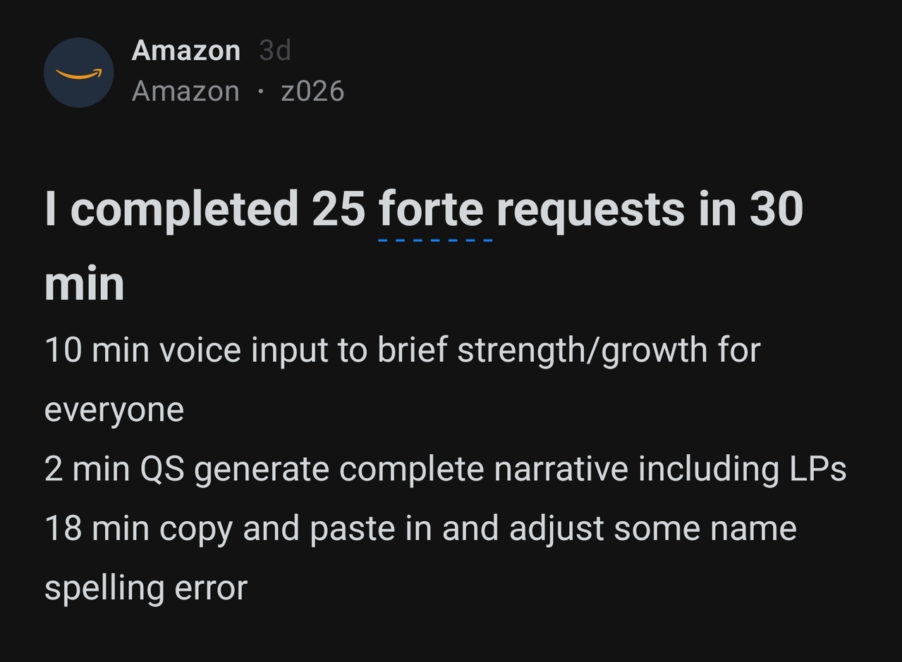
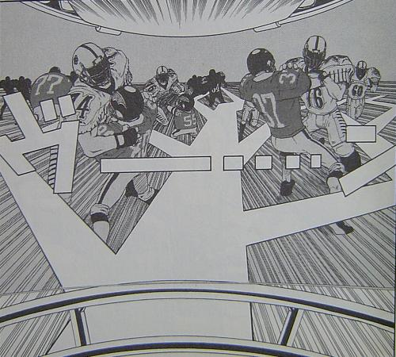

隨著團隊對 AI 工具越來越熟悉，開發工具已經不是困難的任務，各位也都至少完成一次應用開發。
網路上甚至有開發者，把 AI 應用到更多的工作場景中。

但隨著使用次數變多，大家一定會感覺到了——AI 的表現很不穩定。
這背後的原因，其實不是 AI 的問題，而是我們對它的理解不夠透徹。所以今天的分享，不會再教新技術。
而是帶大家回頭補課，理解那些我們一開始直接跳過的基礎概論： 什麼是 AI？ 怎麼用好 AI？
LLM 到底是什麼?
很多人都跟我提過，覺得 AI 笨、不可靠、有幻覺。但深究問題往往會發現，是人類對 LLM 有錯誤的期待。
LLM 並不是有智慧的 AI
在網路上查資料，你會發現大家習慣用「AI」這個大詞來包山包海。
但對研發人員來說，「AI」這個名詞太籠統了——就像用「交通工具」來形容所有會動的載具一樣。
更精準的區分是：
- LLM（大型語言模型）：就是現在 ChatGPT、Claude 背後的技術，已經很成熟
- AGI（通用人工智慧）：能像人類一樣在所有領域思考的 AI，目前還不存在
雖然 OpenAI 的 Sam Altman 說「AGI 已經隱約可見」，Anthropic 的 Dario Amodei 預測 2026-2027 年可能出現
但截至 2026 年初，真正的 AGI 還沒有被發明出來。
而現在的 LLM，核心只做一件事：猜下一個字。
Next Token Prediction（預測下一個 token）
LLM 的核心任務是「預測下一個 token」。它看到「今天天氣」，就猜下一個字可能是「很好」或「不錯」。
→ 它沒有真正的「理解」，只是統計上的模式匹配
在這個基礎上，再透過兩個機制讓它「更好用」：
RLHF（從人類回饋中學習）
讓人類評估 AI 的回答，告訴它哪個答案「更好」，讓它學會符合人類期待的回答方式。
→ 這就是為什麼 ChatGPT 比原始 GPT 更「聽話」
針對 Benchmark 優化
模型會針對各種測試題目優化，所以它在「考試」上表現很好，但實際應用可能有落差。
→ Benchmark 分數 ≠ 實際好用程度
LLM 的知識是「凍結」的
LLM 調教好之後，內部參數就不會更新了。就像一部電影，你可以快轉、重播、倒帶，但不管怎麼操作，內容都一樣。
目前主流模型的知識截止日期與規格
GPT-5.4
Claude 4.7 Opus
Gemini 3.1 Pro
🎬 想深入了解「凍結的參數」是什麼？看這三支影片：
Transformer 如何成為 AI 模型的地基
Transformer 架構 10 分鐘速通
ChatGPT 原理揭密
怎麼讓 LLM 更新新資訊？
既然 LLM 的知識是凍結的，那要怎麼讓它加載最新資訊？主要有三種方式：
Prompt / Context
在對話中直接提供
最簡單的方式，把資訊直接貼進對話裡，讓 LLM 添加到計算中。
✅ 零成本、立即生效
❌ 受上下文窗口限制
RAG 檢索增強生成
讓 AI 搜尋、查資料庫
回答前先從資料庫「搜尋」相關資訊，再根據搜尋結果回答。
✅ 可處理大量文件、即時更新
❌ 需建置向量資料庫
Fine-tuning 微調訓練
重新訓練模型
用客製化資料重新訓練模型，讓知識「寫進」模型參數裡。
✅ 回答更精準、不需每次提供上下文
❌ 成本高、需 ML 專業
💡 實務建議：大多數情況下，Prompt + RAG 就夠用了。Fine-tuning 通常只在需要特定語氣、格式、或高度專業領域時才值得投資。
從 Prompt Engineering 到 Context Engineering
根據 GitHub 2025 年 Spec-Driven Development 研究報告與多項 AI 開發工具產業調查顯示：採用規格驅動開發（Spec-Driven Development）的團隊，AI 程式碼接受率從 33% 提升到 65%。這個數據揭示了一個關鍵轉變：影響 AI 產出品質的核心因素，已經從「如何下指令」轉向「提供什麼資訊」。
LLM 產出的差異主要來自三個因素：提示詞（Prompt）、上下文（Context）、Temperature 設定。2024 年初，主流觀點是「提示詞決定一切」，所有人都在堆疊提示詞、設計複雜的 Chain of Thought。但到了 2025 年，隨著 Claude 4.x 和 GPT-5 等新一代模型的推出，社群開始發現：過度詳細的指令反而限制了模型的發揮，真正的關鍵在於提供完整的上下文（Context）。
這個認知轉變，標誌著我們從 Prompt Engineering 時代進入了 Context Engineering 時代。
主流觀點：「提示詞寫得越詳細、步驟越多，效果越好」
開始有人提出「提示詞可能被高估了」的觀點。
重點不是「怎麼問」，而是「給什麼資訊」
Context Engineering 的核心任務
根據 Anthropic 2025 年 9 月發布的技術文章〈Effective Context Engineering for AI Agents〉，Context Engineering 核心任務是：為 AI 提供完成任務所需的所有資訊與工具，而不只是一個精心設計的提示詞。
AI 專家 Andrej Karpathy 也強調： LLM 應用不是靠運氣或一次性提示詞成功，而是靠精心組裝每一步所需的正確資訊。
撰寫（Writing）
建立外部記憶：用 SPEC.md、README、設計文件等，讓 AI 能「記住」專案背景
選擇（Selecting）
精準檢索：只提供與當前任務相關的資訊，避免資訊過載
壓縮（Compressing）
摘要與精簡：在有限的 Token 預算內，最大化資訊密度
隔離（Isolating）
分區管理：複雜任務拆分成獨立的上下文區塊，避免資訊互相干擾
💡 關鍵洞察：根據 Chroma Research 的「Context Rot」研究，當上下文超過 32K tokens 時，多數模型的準確率會下降超過 50%。Context Engineering 的核心不是「給越多越好」，而是「給對的資訊」——精準的上下文往往比塞滿整個 Context Window 更有效。
Context 最重要的技巧：記筆記
理解了 Context Engineering 的核心任務後，接下來的問題是：實際操作中，我們該怎麼做？
🔧 工具可以「管理」 Context
我們不可能全部自己管理上下文，所以選擇對的工具，讓不同工具能讀取不同來源的資訊就會影響最終效果
- 網頁插件（Q Suite）：讀取當前網頁內容
- CLI 工具（Kiro CLI）：讀取專案資料夾結構
- IDE 工具（Kiro IDE）：讀取本地文件、程式碼庫
好工具不是讓 AI 更聰明，而是更有效地提供上下文。
⚠️ 工具也會「遺失」 Context
但這裡有個很多人沒想過的問題：
當 Session 太長，工具會自動壓縮上下文。
以 Kiro IDE 為例，當 Usage 達到 80% 時，系統會自動開啟新的 Session 並壓縮前後文。
LLM 選擇保留的重點，不一定是你認為重要的。
GitHub 和開發者論壇有開發者抱怨「AI 花了 800K tokens 理解程式碼庫，結果只是一個 API endpoint 設定錯誤」。
解決方案：建立「持久化筆記」
不一定要用 SPEC.md，任何形式的筆記都可以。關鍵是讓 AI 在新 Session 開始時能快速「恢復記憶」。
| 筆記類型 | 適用場景 | 工具支援 |
|---|---|---|
| SPEC.md / README | 專案架構、API 規格、設計決策 | 手動貼入 / IDE 自動讀取 |
| Steering Files | 編碼規範、團隊慣例、專案特定規則 | Kiro IDE 的 .kiro/steering/ 資料夾會自動載入 |
| CLAUDE.md | AI 助手的行為指引、專案背景 | Claude Code、Cursor 等工具會自動讀取 |
💡 實務建議：筆記不是越多越好。根據 Kiro 官方文件，Steering 文件超過 2 頁就應該拆分——太長的筆記反而會佔用 Token 預算，造成新的「過載」問題。建議採用「分層引用」策略：核心規則永遠載入，詳細說明按需引用。
代碼庫 = raw data
筆記 = meta data
IDE 透過 RAG 檢索相關片段。最危險環節——沒有筆記當索引，工具就像亂翻書。
Task：必須保留
Dynamic：易被捨棄
Core：最高權重
Context 進入模型推理。模型再強，輸入破碎則輸出錯誤。
下圖揭示了用戶在 IDE 中與 AI 對話時，背後真實發生的資料流動過程
Context Engineering 的四大失敗模式
根據 2025 年產業實踐經驗，以下是最常見的 Context 管理錯誤：
Overload
過載
把所有資訊都塞進去，AI 反而被無關細節淹沒
Poisoning
污染
錯誤資訊進入上下文後被反覆引用，持續產出錯誤
Confusion
混淆
資訊太雜亂，即使沒有矛盾，AI 也難以理解意圖
Clash
衝突
上下文中存在互相矛盾的資訊，無法產出一致回應
Prompt 技巧：角色扮演比步驟指令更有效
OpenAI 創始成員 Andrej Karpathy 曾公開表示：「LLMs are not chatbots, they are simulators.」。語言模型在訓練時見過最平庸的網友發言，也見過最頂尖專家的論文。如果你只給普通提示詞，模型可能模擬「普通網友」來回答；但如果要求它模擬「世界頂級專家」，模型就會調用訓練資料中那些高品質的思維模式。
與其給 AI 一堆規則限制，不如直接問：「如果你是這個領域的頂尖專家，你會怎麼思考這個問題？」
| 傳統提示詞（設定規則） | 角色扮演提示詞（激發模擬） |
|---|---|
|
請幫我寫一個 Python 腳本。 1. 首先引入 pandas 2. 讀取 csv 檔案 3. 把第一列改名為 "ID" 4. 過濾掉空值 5. 輸出成 json 格式... |
你現在是 Python 數據處理領域的最強大腦。 我的目標是：將這份 CSV 轉換成符合系統 API 規格的 JSON。 請運用你的專業知識，給我最優美的解決方案。 |
「模擬」優於「指導」：大模型本身沒有觀點，但能模擬特定人物的思維方式，從而輸出更高質量的內容。
| 你給的指令 | AI 的反應 | 你得到的結果 | |
|---|---|---|---|
| ❌ 傳統 |
步驟指令 「先做A，再做B...」 |
照章辦事 限制在你給的框架內 |
「及格」的標準答案 不會出錯，但也不會驚艷 |
| ✅ 模擬 |
角色扮演 「你是頂尖專家」 |
調用專家思維 激發訓練資料中的高品質模式 |
「超出預期」的解決方案 可能給你沒想過的好方法 |
人類為什麼仍然重要？
現代 LLM 的訓練過程中，有個步驟叫做 RLHF（Reinforcement Learning from Human Feedback） 從人類回饋中強化學習。
這意味著AI 不會自己判斷什麼是「對的方向」，它只會優化人類告訴它的目標。
成為 AI 的價值函數
價值函數 是用來評估「某個行動能帶來多少預期回報」的數學公式，是人類不可取代的核心競爭力。
🤖 AI 是極致的「優化器」
AI 能基於目標下，迅速找出最佳執行路徑。
但它無法自行定義目的地、商業價值、或是美感。
👤 人類是「價值的定義者」
人類的經驗、直覺、品味，決定了 AI 該優化什麼。
沒有人類，AI 很容易陷入 Goodhart's Law 的陷阱。
💡 Goodhart's Law（古德哈特定律）："When a measure becomes a target, it ceases to be a good measure."
例如工廠的績效指標是「生產釘子的數量」，工人就會製造數百萬個極小的釘子；如果指標改為「生產釘子的重量」，工人就會製造幾個巨大無比的釘子。這兩種結果都不是原本想要的「好用的釘子」。
LLM 的本質工作就是在獎勵函數的基礎上，用盡一切算力去最大化目標函數。由於沒有人類的常識、道德或潛規則，它只看數學指標。因此會比人類更極端地鑽漏洞。
這通常被稱為 「獎勵駭客」或 「規格博弈」。
因此，人類在工作流中的角色，不再只是比拼執行速度，而是運用經驗與直覺，為強大的算力指引正確方向。
當 AI 讓每個人都能快速產出程式碼時，區分高手與新手的不再是「能不能寫」，而是「知不知道該寫什麼」。
💬 「Human taste is now more important than ever as codegen tools make everyone a 10x engineer.」
「當程式碼生成工具讓每個人都成為 10 倍工程師時，人類的品味比以往任何時候都更重要。」Google Chrome 團隊的 Addy Osmani 在他的 AI 工作流文章中也指出：
💬 「AI handles the 70% of routine work, but the challenging 30% becomes an even larger part of our value.」
「AI 處理了 70% 的例行工作，但那困難的 30% 成為我們價值中更大的部分。」為什麼資深工程師使用 AI 的效果往往比新手更好。不是因為他們的提示詞更厲害，而是因為他們知道「什麼是好的程式碼」。
怎麼發揮好的「價值函數」角色？
培養品味（Cultivate Taste）
LLM 的生成上限取決於操作者的鑑賞力。只有看過足夠多的優雅與美好，才能建立內心的「黃金標準」。
並在 LLM 給出 60 分的平庸答案時，指出缺陷之處，並要求它優化至 100 分。
注入真實脈絡（Inject Context）
LLM 擁有通用知識，但缺乏「當下情境」的理解。人類的價值在於補足那些看不到的隱性參數，
例如：公司的商業目標、團隊的技術債現狀、使用者的隱性需求。
定期校準方向（Calibrate Direction）
LLM 很容易陷入「局部最優」的陷阱，因為眼界限制，滿足於現狀，而錯過了真正最好的結果。
每完成一個階段就反問：「這真的是我們要解決的問題嗎？」防止專案在戰術上成功，卻在戰略上失敗。
手段過剩，目標稀缺的時代
在文章的最後，我想偷渡一些個人感想，嘗試回答：為什麼有了 LLM ，工作卻沒有發生『翻天覆地』的變化？
答案可能是：實際上多數人缺乏的是「目標」，而不是「手段」。

高分的低能
即便手握在各項基準測試拿滿分的頂尖 LLM，若使用者心中缺乏明確的「價值函數」，在現實世界中依然無法創造價值。 當 AI 徹底解決了所有「如何做」的執行門檻，潮水就退了；不清楚「為何做」以及「做什麼」的人，就只能裸奔。
在「答案」唾手可得的時代，「好問題」才是真正的稀缺資產。
Computers are useless. They can only give you answers.
電腦毫無用處，因為它只能給你答案。延伸閱讀
- Anthropic: Effective context engineering for AI agents — 官方的 Context Engineering 指南
- Claude Docs: Be clear, direct, and detailed — 官方提示詞最佳實踐
- Reddit: How we got amazing results from Claude Code — 實戰經驗分享
- Learn Prompting: Role Prompting — 角色扮演的學術研究整理
- GitHub Blog: Spec-driven development with AI — Spec-Driven Development 官方介紹
- ByteByteGo: Top AI Agentic Workflow Patterns — Agentic Workflow 模式解析
- Microsoft Work Trend Index 2025 — 人類與 AI 協作的未來
- Addy Osmani: My LLM coding workflow going into 2026 — 資深工程師的 AI 工作流分享